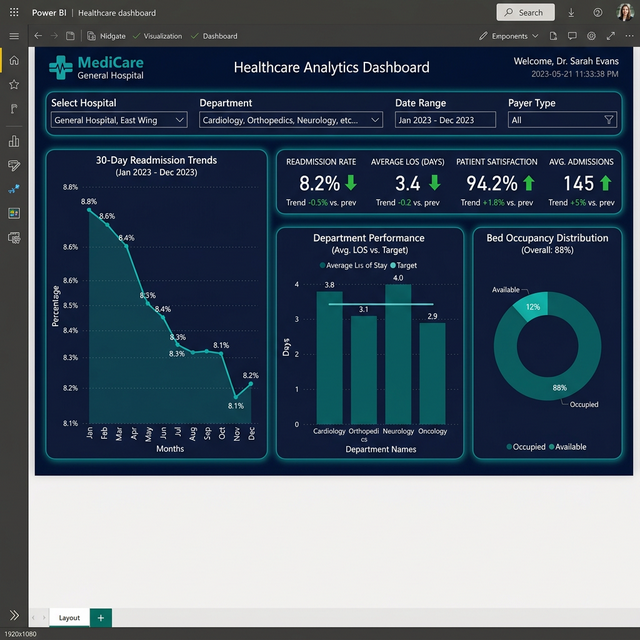

The Challenge
MediCare General Hospital's leadership lacked a unified view of patient outcomes across departments. Readmission data was siloed in the EHR, satisfaction scores arrived monthly via PDF, and bed occupancy was tracked on whiteboards. Clinical directors couldn't correlate care quality with operational efficiency.
Key Business Questions
- What is the 30-day readmission rate by department and trending direction?
- How does average Length of Stay (LOS) compare to national benchmarks?
- Which departments are driving the highest patient satisfaction scores?
- What is real-time bed occupancy, and where are bottlenecks forming?
The Solution
We built a comprehensive Patient Outcomes Platform integrating EHR data, satisfaction surveys, and bed management systems into a single pane of glass:
📊 Readmission Trending
12-month rolling view of 30-day readmission rates with trend analysis. Rate decreased from 8.8% to 8.1% through data-driven interventions.
🏥 Department Performance
Average LOS vs. target by department — Cardiology (3.8 days), Orthopedics (3.1), Neurology (4.0), Oncology (2.9) — enabling resource optimization.
😊 Patient Satisfaction
94.2% overall satisfaction score with drill-down into nursing care, physician communication, discharge planning, and facility cleanliness.
🛏️ Bed Occupancy
Real-time 88% occupancy monitoring with predictive overflow alerts for ICU, Med-Surg, and step-down units.
Dashboard Views

Technical Implementation
Data Architecture
Azure SQL Database with HL7 FHIR integration for real-time EHR data ingestion. HIPAA-compliant data pipeline with row-level security.
Key Metrics
- 30-Day Readmission Rate
- Average Length of Stay (LOS)
- Patient Satisfaction Score
- Bed Occupancy %
Data Sources
- Electronic Health Records (EHR)
- Press Ganey Satisfaction Surveys
- Bed Management System
- Claims & Billing Data
Compliance
HIPAA-compliant deployment with PHI anonymization, audit logging, and role-based access for clinical vs. administrative users.
The Results
"The dashboard identified a care transition gap in our Cardiology unit that was driving 40% of our readmissions. Once we addressed it, our 30-day rate dropped below the national average for the first time."